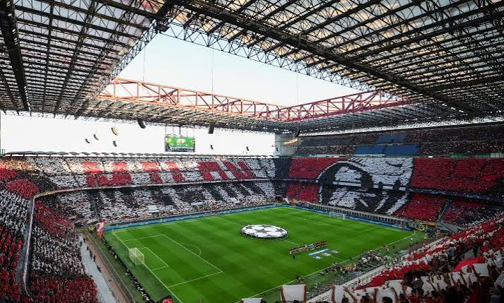
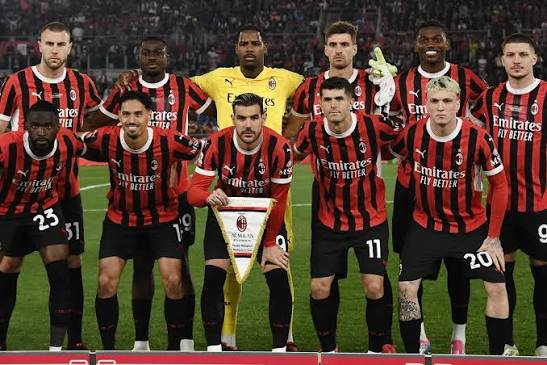

Founded
1899
Italy
Discover the history, stadium, legendary players, major trophies, records, and interesting facts about AC Milan.
Introduction
AC Milan is a professional soccer club based in Milan, Italy. Founded in 1899, Milan has developed into one of the most successful clubs in Italian and European soccer. The club is famous for its red and black striped shirts, legendary players, major trophies, and supporters around the world.
AC Milan plays its home matches at the San Siro, officially named Stadio Giuseppe Meazza. Milan shares the stadium with city rival Inter Milan. The San Siro has become one of the most recognizable stadiums in world soccer and has hosted many important domestic and European matches.
Milan is commonly known as the "Rossoneri," which means "Red and Blacks" in Italian. The colors have been part of the club since its early history and remain one of the most recognizable uniform designs in European soccer.
Many legendary players have represented AC Milan, including Paolo Maldini, Franco Baresi, Marco van Basten, Ruud Gullit, Andriy Shevchenko, Kaká, Andrea Pirlo, Clarence Seedorf, Alessandro Nesta, and Zlatan Ibrahimović.

About the Club
AC Milan was founded in 1899 by a group that included English businessman Herbert Kilpin. The club was originally known as Milan Foot-Ball and Cricket Club. Its English connection is one reason the club continues to use "Milan" rather than the Italian name "Milano."
Milan experienced success early in its history, winning its first Italian championship in 1901. Additional championships followed in 1906 and 1907, establishing the club as an important team during the early development of Italian soccer.
One of Milan's greatest early stars was Swedish striker Gunnar Nordahl. He joined the club in 1949 and became an extraordinary goalscorer. Nordahl helped Milan win league championships and eventually became the club's all-time leading scorer.
Milan achieved major European success during the 1960s. In 1963, the club defeated Benfica to win its first European Cup. Milan won the competition again in 1969, establishing itself as one of Europe's leading clubs.
Another historic period began during the late 1980s under manager Arrigo Sacchi. Milan built a team that included Italian legends such as Franco Baresi and Paolo Maldini alongside Dutch stars Marco van Basten, Ruud Gullit, and Frank Rijkaard.
Sacchi's Milan became famous for its organized defending, pressing, movement, and attacking style. The club won consecutive European Cups in 1989 and 1990. That team is still considered one of the greatest club teams in soccer history.
Milan continued its success under Fabio Capello. During the 1991-92 Serie A season, Milan completed the entire league campaign without losing a match. The club also defeated Barcelona 4-0 in the 1994 Champions League final.
Another successful European generation developed during the 2000s under manager Carlo Ancelotti. Players such as Paolo Maldini, Kaká, Andrea Pirlo, Clarence Seedorf, Alessandro Nesta, Gennaro Gattuso, and Andriy Shevchenko helped Milan become one of Europe's strongest teams.
Milan won the Champions League in 2003 after defeating Juventus in a penalty shootout. The club reached the final again in 2005 but lost to Liverpool after surrendering a 3-0 lead. Milan responded by defeating Liverpool 2-1 in the 2007 final to win another European championship.
After several years without a league championship, Milan returned to the top of Italian soccer by winning Serie A during the 2021-22 season. The championship added another important chapter to the history of a club known for success in both Italy and Europe.

Club Details
1899
Milan, Italy
San Siro
Red and Black
Club Record
Gunnar Nordahl is AC Milan's all-time leading goalscorer with 221 official goals. The Swedish striker represented Milan from 1949 to 1956 and became one of the greatest goalscorers in the history of Italian soccer.
Nordahl was known for his strength and finishing ability. He won the Serie A top-scorer award five times while playing for Milan and helped the club win two Italian league championships.
Success
Legendary Players
Several AC Milan players have won the Ballon d'Or while representing the club. These winners include some of the greatest players in Milan's history.
Marco van Basten won the award three times while representing Milan. Kaká became Milan's most recent Ballon d'Or winner when he received the award in 2007 after helping the club win the Champions League.
Did You Know?